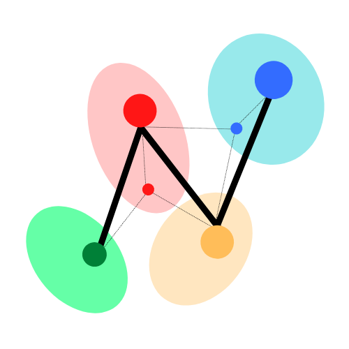

predoctoral researcher · dept. of economics · nus
I work on
I am a predoctoral researcher in the Department of Economics at the National University of Singapore. My research sits at the intersection of empirical economics, machine learning, and computational social science, using large-scale data, causal inference, and deep learning to study media, political economy, labor markets, and cultural dynamics. I hold double honours degrees in Data Science & Analytics and Economics from NUS, where I was awarded the Paul Sherwood Memorial Gold Medal for Best Graduate in Economics and the Lijen Industrial Development Medal for Best Honours Project.

My work draws on tools from econometrics, deep learning, natural language processing, and network analysis to study questions in political economy, media, and computational social science. I am interested in how information environments shape political and economic outcomes, and in building the quantitative infrastructure necessary to answer those questions rigorously.
At NUS, I have worked across several domains: constructing novel datasets on international media coverage, labor markets, and judicial decision-making; designing field experiments to study political preferences; and developing Bayesian adaptive methods for clinical trials in collaboration with Procter & Gamble. I also work on deep learning for audio and 3D vision, and have contributed to software that supports statistical pedagogy and automated assessment.
Outside the laboratory, I am committed to open science and education. I have organized workshops on generative AI, computer vision, and network analysis, mentored students in data analytics and programming, and published over 25 articles on data science and statistics with more than 100,000 total reads.
My research weaves together several intellectual threads that share a common ambition: to bring high-resolution data and rigorous quantitative methods to bear on questions about how societies organize, communicate, and make decisions.
How do media institutions frame political events, and what are the downstream effects on public opinion and political outcomes? I construct and analyze large-scale cross-national media datasets to study coverage patterns, coded rhetoric, and information asymmetries.
I use NLP, network analysis, and causal inference to study social phenomena at scale, including music diffusion across cultures, judicial decision-making, charitable giving, and labor market dynamics, building datasets and methods that enable systematic empirical inquiry.
My methods work spans complex-valued neural networks for audio processing, 3D scene reconstruction (NeRF, SLAM), computer vision for surveillance, and LLM-based text classification. I am interested in adapting deep learning architectures to structured, domain-specific problems.
I develop and evaluate Bayesian adaptive trial designs, including normalized power priors and meta-analytic-predictive priors, and contribute statistical software for copula-based dependence modeling and reproducible fairness benchmarking.
I develop signaling and game-theoretic models for settings where information disclosure is strategic, including data markets and urban real estate, deriving equilibrium conditions and analyzing policy levers that improve allocative efficiency.
I routinely apply difference-in-differences, instrumental variables, regression discontinuity, and high-dimensional fixed effects to identify causal effects in observational and quasi-experimental data across domains including finance, labor, and judicial behavior.
To be presented at the Australasian Public Choice Conference (APCC 2026), Sydney, Australia.
Presented at the Singapore Economic Review Conference (SERC, 2026), Singapore.
IEEE Conference on Artificial Intelligence (CAI 2026), Granada, Spain.
IEEE/ACM International Workshop on Large Language Models for Code (LLM4Code), ICSE 2025, Ottawa, Canada.
covalchemy: R Package for Constructing Joint Distributions with Control over Statistical Properties
LINK
autoharp: R Package for Semi-Automatic Grading of R/Rmd Scripts
LINK
covalchemy R package.
No papers in this research area yet.
Department of Economics, National University of Singapore
Working with Dr. Ruben Durante and Dr. Xiaoyue Shan on projects spanning media economics, political economy, and labor markets. I have built a large-scale dataset of 200,000+ newspaper articles from 40+ outlets across 15+ countries on Gaza media coverage (2004–2024), automating scraping, metadata structuring, and regression-based trend analysis. For a labor market study, I developed automation tools for bulk job applications deployed across 10,000+ applications to study how application patterns relate to gender and salary expectations. I have also constructed longitudinal street-name data for all Spanish municipalities (2000–2024) using OpenStreetMap, geospatial matching, named entity recognition, and Wikidata linkage, to study symbolic policy through urban renaming. Additional contributions include field experiment infrastructure on Upwork (20+ task websites, automated profile scraping, political preference surveys), LLM-based detection of dog-whistle political rhetoric in campaign advertisements, and deep learning pipelines for PhD supervisor–student matching and peer effects.
Procter & Gamble & Institute of Mathematical Sciences, Singapore
Collaborated with P&G researchers to develop adaptive algorithms for leveraging historical data in randomized controlled trials, minimizing control-group sample sizes while maintaining Type I and Type II error control. Optimized a suite of Bayesian borrowing priors, including normalized power priors, commensurate priors, elastic priors, and meta-analytic-predictive priors, reducing computational overhead by up to 78% and improving borrowing accuracy in low-congruence trial settings.
School of Computing, National University of Singapore
Examined inter-firm alliance networks and their temporal effects on profitability using Louvain community detection and network centrality measures, providing strategic insights into how dynamic network structures shape long-term firm performance. Also explored ensemble methods and base learners for XGBoost financial fraud detection pipelines, achieving 99% classification accuracy through rigorous statistical inference and model evaluation.
Singapore Bus Services Transit (SBST), Singapore
Researched and developed a system for detecting visual impairments, including blurriness and overexposure, in surveillance footage using deep convolutional neural networks, achieving 96% classification accuracy. Implemented a Siamese network utilizing SVD maps and Fourier transformation features with OpenCV, TensorFlow, and Keras for robust blur detection across varying video conditions.
Jio AI Centre for Excellence, India
Researched algorithms for Simultaneous Localization and Mapping (SLAM), including attention-based graph feature matching (SuperGlue), 3D reconstruction with Neural Radiance Fields (NeRF), and monocular depth estimation (ZoeDepth). Experimented with alternative training paradigms, including Forward-Forward training and Predictive Coding, achieving a 3× performance improvement through efficient gradient computation and enhanced scalability.
A.P. Moller – Maersk (APM Terminals), Singapore
Developed an Electronic Virtual Management System (EVMS) for APM Terminals, integrating 20+ databases to enable automated report generation, real-time operational dashboards, and systematic KPI tracking across logistics, finance, and risk management functions.
I served as an Undergraduate Teaching Assistant across the Departments of Computer Science and Economics at NUS from July 2022 to July 2025, and received multiple teaching excellence awards during that period.
Workshops organized: Generative AI for Business · Computer Vision with OpenCV · Network Analysis with tidygraph (R User Conference) · Introductory & Advanced LaTeX · NUS SoC Summer Workshops
| Paul Sherwood Memorial Gold Medal (Best Graduate in Economics) | 2025 |
| Lijen Industrial Development Medal (Best Honours Project) | 2025 |
| Sugar Industry of Singapore Prize (Best Performance, Faculty of Science) | 2022 |
| NUS Dean's List & Dean's Scholars List | 2022–25 |
| Undergraduate Teaching Excellence Award, Department of Economics | 2024, 2025 |
| School of Computing Honour List of Tutors | 2024, 2025 |
| Department of Statistics & Data Science Teaching Assistant Award | 2024, 2025 |
| Top Student Awards: Data Structures & Algorithms, AI, Database Systems | 2023–25 |
| National Economics Olympiad (SRCC), All India Rank 2 | 2020 |
I welcome inquiries from researchers, collaborators, and prospective students. The best way to reach me is by email.
Department of Economics
National University of Singapore
21 Lower Kent Ridge Road
Singapore 119077